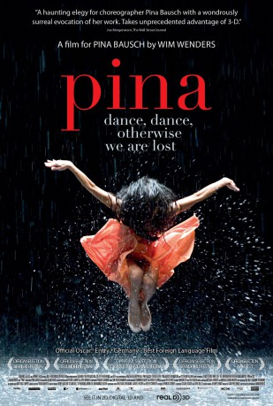

#4932 Pina - ein Tanzfilm
Auszeichnungen: für 1 Oscars nominiert
 
 IMDB-Wertung: 7.7 / 10
IMDB-Wertung: 7.7 / 10  Metascore: 0
Metascore: 0 
In modern dance since the 1970s, few choreographers have had more influence in the medium than the late Pina Bausch. This film explores the life and work of this artist of movement while we see her company perform her most notable creations where basic things like water, dirt and even gravity take on otherworldly qualities in their dancing.
Jahr: 2011
Dauer: 103 Minuten
FSK: 0
Land: Deutschland Studio: NFP Marketing & DistributionTonspuren:
Untertitel:
Auflösung: 1080p (1920x1040) Größe: 6369 MB
Genre: Dokumentation
Regisseur:  Wim Wenders
Wim Wenders
Drehbuch: Benjamin Quabeck
Soundtrack:
Darsteller:
- Pina Bausch als Herself , archive footage
- Regina Advento als Herself - Dancer
- Malou Airaudo als Herself - Dancer
- Ruth Amarante als Herself - Dancer
- Jorge Puerta als Himself - Dancer
- Rainer Behr als Himself - Dancer
- Andrey Berezin als Himself - Dancer
- Damiano Ottavio Bigi als Himself - Dancer
- Bénédicte Billet als Herself - Dancer
- Ales Cucek als Himself - Dancer
- Clementine Deluy als Herself - Dancer
- Josephine Ann Endicott als Herself - Dancer
- Lutz Förster als Himself - Dancer
- Pablo Aran Gimeno als Himself - Dancer
- Mechthild Großmann als Herself - Dancer
- Silvia Farias Heredía als Herself - Dancer
- Barbara Kaufmann als Herself - Dancer
- Na Young Kim als Herself - Dancer
- Daphnis Kokkinos als Himself - Dancer
- Ed Kortlandt als Himself - Dancer
- Eddie Martinez als Herself - Dancer
- Dominique Mercy als Himself - Dancer
- Thusnelda Mercy als Herself - Dancer
- Ditta Miranda Jasjfi als Herself - Dancer
- Cristiana Morganti als Herself - Dancer
- Morena Nascimento als Herself - Dancer
- Nazareth Panadero als Herself - Dancer
- Helena Pikon als Herself - Dancer
- Fabien Prioville als Himself - Dancer
- Jean-Laurent Sasportes als Himself - Dancer
- Franko Schmidt als Himself - Dancer
- Azusa Seyama als Herself - Dancer
- Julie Shanahan als Herself - Dancer
- Julie Anne Stanzak als Herself - Dancer
- Michael Strecker als Himself - Dancer
- Fernando Suels als Himself - Dancer
- Aida Vainieri als Herself - Dancer
- Anna Wehsarg als Herself - Dancer
- Tsai-Chin Yu als Herself - Dancer
- A.A. Gonzales als Guest Dancer for 'Le Sacre du printemps'
- Stephen Brinkmann als Guest Dancer for 'Le Sacre du printemps'
- M.C. Esteban als Guest Dancer for 'Le Sacre du printemps'
- Paul Hess als Guest Dancer for 'Le Sacre du printemps'
- Rudolf Giglberger als Guest Dancer for 'Le Sacre du printemps'
- Mu-Yi Kuo als Guest Dancer for 'Le Sacre du printemps'
- Chrystel Wu Guillebeaud als Guest in 'Le Sacre du printemps'
- Szu-Wei Wu als Guest Dancer for 'Le Sacre du printemps'
- Tomoko Yamashita als Guest Dancer for 'Le Sacre du printemps'
- Sergey Zhukov als Guest Dancer for 'Le Sacre du printemps'
- Sandrine Pillon als Narrator
Datei: X:\Dokumentationen\Biografie\Pina - ein Tanzfilm (2011, FSK0, 1920x1040).mkv seit 02.12.2016
Festplatte: HD Serien(SU-Z)+Dokus+Musik
 Es gibt insgesamt 21 Filme in der Gruppe 'Dokumentationen\Biografie'
Es gibt insgesamt 21 Filme in der Gruppe 'Dokumentationen\Biografie'